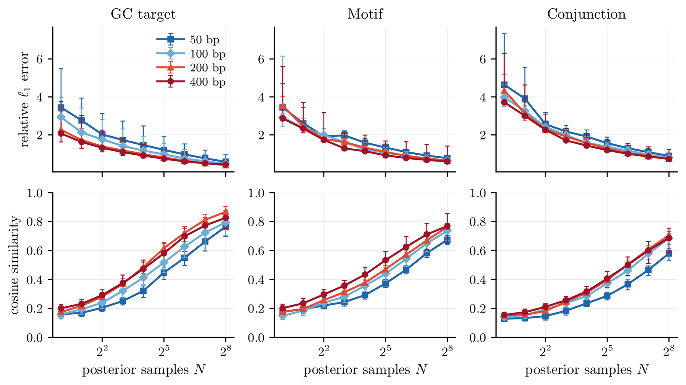

Preprint 2026dMFM & multiMFM
Scalable Inference-time Steering in Biological Design with Multimodal Meta Flow Maps
1Harvard University 2Princeton University 3Kempner Institute 4IAIFI *Core contributors

Overview
Distill one reward-independent flow map per base generator, then steer discrete, continuous or mixed outputs toward any differentiable objective at inference time.
Biological design problems are continuous (molecular structures), discrete (DNA residue types), and often both at once (protein structure–sequence co-design). Diffusion and CTMC-based methods exist for multimodal generation, and for cross-modal tasks the two are typically combined. It remains hard to adapt them at inference time to satisfy design constraints. One-shot samplers such as Meta Flow Maps have shown high controllability for image generation by supplying accurately estimated reward gradients.
We adapt Meta Flow Maps to biological domains, developing the framework in the discrete setting (dMFM) and the multimodal setting (multiMFM). We demonstrate dMFM by designing DNA sequences with a target mechanical property, and apply multiMFM, trained on QM9 and GEOM-Drugs, to design molecules with a given physical property. In both cases the steering algorithms improve target attainment using one reward-independent MFM per base generator.
Contributions
- We construct multiMFM for small-molecule generation, steering toward chemical-property targets with a single distilled map reused across objectives.
- We formulate discrete GLASS posterior sampling and derive the discrete Meta Flow Map.
- We combine continuous and discrete MFMs for mixed discrete–continuous steering.
- dMFM enables inference-time optimization of DNA sequences toward prescribed cyclizability values.
- QM9, six properties 5 of 6 best reported MAE among steering methods, with one backbone instead of one generator per property.
- Value estimate ~100× lower error than the denoiser and one-step-map point estimates it replaces, and it keeps falling with budget.
- DNA, oracle MAE 0.15 from 1.17 against a parent-disjoint oracle at target \(y^\star = +1\); 98.3% of paired samples improve.
- Steer-search 0 extra generative-model calls: it returns the best valid look-ahead the estimator already computed.
Method
Steering a fixed generator with posterior look-aheads
Let a flow matching model \(b_t(x_t)\) sample \(p_1\). To sample the reward-tilted distribution \(\propto p_1(x_1)e^{r(x_1)}\), the exact drift, score and posterior value function give an ODE sampler
Everything turns on the value function \(V_t\). A Meta Flow Map \(\Phi(\cdot\,;t,x_t)\) is a one-step sampler that maps Gaussian noise to a sample of the posterior \(p_{1|t}(\cdot\mid x_t)\). Drawing \(N\) noises gives \(N\) look-aheads at the finished object and a Monte Carlo estimator of the gradient:
This is what separates the method from a denoiser or one-step-map approximation. Those produce a point estimate of a quantity that is an expectation, so no amount of compute improves them; the posterior estimator converges with \(N\). The finite-\(N\) log-mean estimator is biased, and for discrete outputs, differentiating through simplex-valued predictions estimates a relaxed surrogate rather than pathwise gradients through exact categorical samples.

The discrete map
Discrete flow matching learns a denoiser \(\psi_t(x_t)=\mathbb{E}[X_1\mid X_t=x_t]\) valued on the simplex \(\Delta^{K-1}\), whose velocity is analytic in it: \(b_t(x) = (\psi_t(x)-x)/(1-t)\). Extending GLASS to this setting, the posterior \(p(x_1\mid X_t=x_t)\) is sampled by an inner flow whose velocity is again analytic in the base denoiser, evaluated at a reparameterized time \(t^\ast\) on a sufficient statistic \(S(\bar x_s, x_t)\).
A dMFM \(\mathbf{X}_{s,u}(\cdot\,;t,x_t):\mathbb{R}^K\to\mathbb{R}^K\) is the solution operator of that inner ODE: for every \(t<1\), every \(x_t\) and every \(0\le s\le u<1\), \(\mathbf{X}_{s,u}(\bar x_s;t,x_t)=\bar x_u\). The terminal map at \(u=1\) is an almost-sure endpoint limit.
We reparameterize it through a mean meta denoiser \(\mathbf{\Psi}_{s,u}\), kept on the simplex by a softmax over network logits. Training needs no simulation of the inner ODE: on the diagonal the meta denoiser collapses onto the base model.
For the linear interpolant, \(\mathbf{\Psi}_{s,s}(\bar x_s;t,x_t) = \psi_{t^\ast}(S(\bar x_s, x_t))\), where \(\psi\) is the base discrete flow matching denoiser.
This gives a cross-entropy diagonal loss against the base model, which we add to a consistency loss enforcing the solution-operator identity. We use Eulerian self-distillation (ESD) for consistency training; progressive and Lagrangian variants are theoretical alternatives.
Multimodal steering
For a state with continuous and discrete parts \(x_t = (y_t, a_t)\), multiMFM samples the joint posterior and splits into continuous and discrete components \(\mathbf{X}_{s,u} = (\Phi^c_{s,u}, \mathbf{X}^d_{s,u})\), with each path steered by the partial gradient of the same value function. In practice we replace the exact coefficient \(\sigma_t^2/2\), which diverges as \(t\to 0\) and vanishes as \(t\to 1\), with a tuned guidance strength \(\gamma\):
\(\gamma\) and the reward scale are practical hyperparameters and form no part of the theory; per-experiment values are given in the paper. Independent modality schedules require a matching joint posterior — changing the two coefficients alone does not preserve the exact-law argument.
Steer-search costs nothing
multiMFM already computes a look-ahead at the finished object at every guided step, then throws it away. Steer-search keeps the best one. A look-ahead replaces the incumbent only if the guide scores it closer to the target and it passes PoseBusters, and the sampler returns that incumbent rather than wherever the trajectory landed. Measured with forward hooks, both arms spend exactly the same number of generative-model calls.
multiMFM with steer-search
Require: multiMFM \(\mathbf{X}=(\Phi^c, \mathbf{X}^d)\); base velocities \(b^y_t, b^a_t\); regressor \(\mathcal{R}\); target \(c^\star\); validity checker \(\pi\in\{0,1\}\); look-aheads \(N\); strength \(\gamma\).
- set \(r(y,a) = -\beta\|\mathcal{R}(y,a) - c^\star\|^2\); initialize \((y_0,a_0)\sim p_0\), store \(S\leftarrow\emptyset\), \(\mathrm{err}(S)\leftarrow+\infty\)
- for \(k = 0,\dots,T-1\) do
- sample \(\epsilon^y_i,\epsilon^a_i\) and draw look-aheads \((y_{1,i}, a_{1,i}) \leftarrow \mathbf{X}_{0,1}(\epsilon^y_i, \epsilon^a_i;\, t_k, y_{t_k}, a_{t_k})\), \(i=1,\dots,N\)
- if \(\mathrm{err}_i < \mathrm{err}(S)\) and \(\pi(y_{1,i},a_{1,i}) = 1\) then \(S \leftarrow \{(y_{1,i},a_{1,i}),\ \mathrm{err}_i\}\) — the only extra work
- estimate \(\widehat{\partial_y V}\) and \(\widehat{\partial_a V}\) from the same look-aheads, then advance one step of size \(\gamma\,\widehat{\partial V}\,dt\)
- return the endpoint if it is valid and beats \(S\), else the molecule stored in \(S\)
One caution on reading it: selection is made on the guide, so the guide's view of the selected molecule improves far more than an independent oracle's does. Only the oracle column is the result.
Experiment 1 — discrete
Designing DNA for a target mechanical property
Sequence-encoded DNA mechanics carry regulatory information beyond transcription-factor motif content. Loop-seq measurements showed that intrinsic cyclizability is sequence dependent, and that promoter-proximal yeast nucleosome-depleted regions contain unusually low-cyclizability DNA. We train a base discrete flow model in the ambient sequence space \((\mathbb{R}^4)^L\), distill it into a dMFM with the ESD loss, and steer 50-bp sequences toward a prescribed predicted cyclizability.

| Target \(y^\star\) | Mean oracle score | mean [95% CI] | |||
|---|---|---|---|---|---|
| Unguided | Guided | Unguided MAE | Guided MAE | Paired improvement | |
| \(+1\) | \(-0.171\) | \(0.920\) | 1.174 [1.149, 1.200] | 0.153 [0.146, 0.161] | 1.020 [0.994, 1.048] |
| \(-1\) | \(-0.171\) | \(-0.964\) | 0.833 [0.806, 0.857] | 0.117 [0.111, 0.123] | 0.715 [0.688, 0.742] |
Independent evaluation of cyclizability-guided generation with dMFM, \(n=1000\) guided–unguided pairs per target sharing initial noise. Guidance reduces oracle target error for 98.3% of pairs at \(y^\star{=}{+}1\) and 97.2% at \(y^\star{=}{-}1\).
Target attainment transfers to the parent-disjoint oracle, which shows the gains are not an artifact of evaluating with the regressor being optimized. The guided errors of 0.153 and 0.117 are, however, comparable to the oracle's own MAE of 0.16 against measured C0 on held-out parents. The experiment establishes that guidance reaches the target region, not that it attains the target to within 0.15; resolving finer differences would need a more accurate evaluator than either regressor.
A split that precedes windowing
Loop-seq gives 100-bp records; consecutive central 50-bp windows overlap by 43 bp, so they reconstruct into 576 contiguous 1,044-bp parents. We split those 576 parents before extracting any window, into 230 training and 29 validation parents per half plus 58 held-out test parents. A split applied after extraction would place overlapping neighbours on both sides.
Rewards with no learned evaluator
To test steering without any learned scorer, we also use two exactly computable sequence rewards: a smooth occurrence score for the motif TTTTTC, and a conjunction requiring both TTTTTC and AAAATT. Across \(L\in\{50,100,200,400\}\), guidance improves around 95% of matched pairs.
Experiment 2 — multimodal
Molecular property guidance on QM9
We train a molecule model whose discrete modality is atom types and whose continuous modality is coordinates. The architecture follows TABASCO, with the CTMC over discrete types replaced by discrete flow matching with a continuous Gaussian prior flowing to the simplex. After verifying strong PoseBusters validity on the base model, we distill a multiMFM and steer with the heavy-atom setup of TFG-Flow.
One asymmetry is worth stating plainly, because it runs against us. We import published baselines evaluated under RDKit validity, while our errors use the stricter PoseBusters filter, which additionally checks bond lengths, angles, planarity, internal clashes and internal energy. A molecule that is RDKit-valid but geometrically implausible is scored under the imported baselines and discarded under ours.
| Method | \(C_v\)cal/mol·K | \(\mu\)D | \(\alpha\)Bohr³ | \(\Delta\varepsilon\)meV | \(\varepsilon_{\mathrm{HOMO}}\)meV | \(\varepsilon_{\mathrm{LUMO}}\)meV |
|---|---|---|---|---|---|---|
| Reference | ||||||
| Upper bound | 6.87 | 1.61 | 8.98 | 1464 | 645 | 1457 |
| #Atoms | 1.97 | 1.05 | 3.86 | 886 | 426 | 813 |
| Lower bound | 0.040 | 0.043 | 0.09 | 65 | 39 | 36 |
| Conditionally trained | ||||||
| Cond-EDMContinuous diffusion | 1.065 | 1.123 | 2.78 | 671 | 371 | 601 |
| EEGSDEContinuous diffusion | 0.941 | 0.777 | 2.50 | 487 | 302 | 447 |
| UniGEMContinuous diffusion | 0.873 | 0.805 | 2.22 | 511 | 233 | 592 |
| Cond-FlowMultimodal flow | 1.52 | 0.962 | 3.10 | 805 | 435 | 693 |
| Training-free guidance | ||||||
| DPSContinuous diffusion | 5.26 | 63.2 | 51169 | 1380 | 744 | NA |
| LGDContinuous diffusion | 3.77 | 1.51 | 7.15 | 1190 | 664 | 1200 |
| FreeDoMContinuous diffusion | 2.84 | 1.35 | 5.92 | 1170 | 623 | 1160 |
| MPGDContinuous diffusion | 2.86 | 1.51 | 4.26 | 1070 | 554 | 1060 |
| UGDContinuous diffusion | 3.02 | 1.56 | 5.45 | 1150 | 582 | 1270 |
| TFGContinuous diffusion | 2.77 | 1.33 | 3.90 | 893 | 568 | 984 |
| TFG-FlowMultimodal flow | 1.75 | 0.817 | 2.32 | 804 | 364 | 941 |
| Ours | ||||||
| multiMFMMultimodal flow | 0.44 | 0.56 | 1.05 | 465 | 238 | 306 |
| multiMFM-SSMultimodal flow | 0.43 | 0.56 | 0.99 | 450 | 238 | 274 |
Mean absolute error for molecular property guidance; lower is better. Published baselines are reproduced from Table 1 of TFG-Flow. Bold marks the best value in each column among steering methods and underline the second best; the three reference rows are excluded from both. Our rows are the mean over replicate runs of 1,000 molecules each, over all generated molecules rather than a validity-filtered subset.
multiMFM errors are lower than the published TFG-Flow values on every property, at some cost in PoseBusters validity relative to the unguided base model — 98.4% unsteered, 90.2–92.5% with multiMFM, and 96.2–98.5% with steer-search, which raises validity on every property and lowers the error on four of the six. Uniqueness improves under steering too, from 70.8% unsteered to 88–95% steered and 97.5–98.3% with steer-search.
Note that TFG-Flow's "training based" category covers methods that learn property-conditioned generation or guidance components. We train the multiMFM once and then apply any reward function to it. Training it is only for sampling efficiency: the same posterior guidance can be done training-free with multimodal GLASS flows.
Scaling to drug-sized molecules
GEOM-Drugs contains molecules up to 71 heavy atoms, against 9 for QM9. We follow TFG-Flow's structural fingerprint benchmark, but take the log-reward to be a differentiable relaxation of the Tanimoto coefficient itself rather than a squared error on the same fingerprints. That choice matters more than any other setting here: asked to rank single-atom substitutions of real molecules, the relaxed Tanimoto reward agrees with true Tanimoto about twice as well as squared error does.
This metric needs a floor before it can be read. Two unrelated real molecules of this size already share a Tanimoto similarity of about 0.22, because a path-based fingerprint rewards genericness. What guidance is worth is how far it moves above that floor, not its raw value.

| Method | Tanimoto similarity ↑ | Margin over floor ↑ | PB-valid (%) |
|---|---|---|---|
| Molecules up to 71 heavy atoms | |||
| Random pair of real molecules (floor) | 0.2195 | — | — |
| Our base generator (unguided) | 0.2288 ± 0.0006 | +0.009 | 87.5 |
| multiMFM | 0.2760 ± 0.0016 | +0.057 | 89.5 |
| Capped at 30 heavy atoms, TFG-Flow's protocol | |||
| Random pair of real molecules (floor) | 0.2099 | — | — |
| TFG-Flow unconditional | 0.170 ± 0.001 | −0.040 | — |
| TFG-Flow | 0.208 ± 0.002 | −0.002 | — |
| Our base generator (unguided) | 0.2259 ± 0.0004 | +0.016 | 87.5 |
| multiMFM | 0.2488 ± 0.0005 | +0.039 | 89.0 |
Tanimoto similarity between the directly counted fingerprint of each generated molecule and its target; no learned evaluator is involved. Our rows are the mean ± standard error over three replicates of 4,096 molecules, on seeds that played no part in selecting the guidance strength. The lower block uses TFG-Flow's cap and their scoring convention, which averages over all generated samples and counts an unconvertible one as zero; their two values are reproduced from the paper, which reports no validity figure.
Scaling and robustness
The estimator that recovers the value function is the one that steers best per call
The premise of the method is that a flow map makes the value function reachable by Monte Carlo, where a denoiser can only approximate it. That premise and its consequence can be measured separately, and they agree.

Estimating the value function
multiMFM's error falls steadily as it spends more posterior samples, overtaking both point estimates after only a couple of them and ending about two orders of magnitude below either. The baselines are flat by construction: no amount of compute improves a point estimate of a quantity that is an expectation.
The advantage carries into the samples
multiMFM is below every baseline at every budget we test. Its lead over DPS — the comparison that holds the selection rule fixed — widens with budget, from a few percent to better than a factor of two, precisely because DPS has no posterior budget to spend. multiMFM-SS reaches at roughly half the compute an accuracy best-of-\(N\) attains only at the top of its range.
Two baselines reduce to independent sampling once corrected
Feynman–Kac resamples its particles with replacement, which destroys diversity even when the weights are uniform. Gating resampling on the effective sample size, as is standard, removes that — and its tuned temperature on QM9 then goes to zero, at which point the method is best-of-\(N\); the figure shows the two superimposed. On DNA the same holds for MCTS, which matches best-of-\(N\) at matched rollout count, because the reward is terminal-only and the tree has no intermediate signal to exploit. We report both rather than present either as a distinct baseline it is not.
NFE counts do not assume parallel execution, and NFEs alone do not establish equal wall-clock cost, especially when comparing forward sampling against guidance that requires backpropagation.
Does the Monte Carlo budget have to grow with sequence length?
Raw per-coordinate MAE is confounded by reward-gradient scale: when a sequence-level gradient is spread over more coordinates, both its per-coordinate magnitude and its absolute estimation error can fall. We therefore measure finite-sample convergence with pooled relative \(\ell_1\) error and cosine similarity against an independent GLASS reference built from 2,048 samples.

Both metrics improve with the number of posterior samples, and neither degrades systematically between 50 and 400 bp. We find no evidence that the parallel Monte Carlo budget must grow exponentially with sequence length — which is not a claim that a fixed budget suffices for arbitrary lengths.
We use \(N=8\) as the operating point for the DNA experiments. At that budget the estimate is directional rather than precise: the per-coordinate error is comparable to the gradient's own magnitude and agreement with the reference direction is weak. That is enough to steer, but it is not an accurate gradient, and larger budgets buy more fidelity.
Discussion
What this changes, and what it does not
The quality of the value estimate governs inference-time steering, and a flow map is what makes that estimate reachable. multiMFM recovers the value function roughly two orders of magnitude more accurately than the denoiser and one-step-map approximations it replaces, and it is precisely that estimator which then steers best per network call. On QM9 it attains the best reported error on five of the six properties while using a single reward-independent backbone, where the conditional baselines train one generator per property.
On GEOM-Drugs the approach carries to drug-sized molecules, where guidance clears the similarity metric's own random-pair floor by several times what the unguided generator manages. The reward's form matters more than its strength there: differentiating a relaxation of the reported metric, rather than a squared error on the same features, is what separates a result from a null.
Limits we want read with the results
- Selection-based variants are scored by the guide, so only an independent oracle should be read as the result.
- On DNA the finite-sample gradient at our operating budget is directional, not accurate.
- The DNA oracle remains a learned predictor; nothing here establishes experimental biological validity.
- Our molecular errors are computed under a stricter validity filter than the imported baselines, so the populations differ.
Two findings cut against current practice rather than for our method: Feynman–Kac steering and Monte Carlo tree search, implemented faithfully and corrected, both reduce to independent sampling on these tasks. Reporting them as distinct baselines overstates what inference-time search contributes. The work opens avenues for applying dMFM and multiMFM steering to base models with higher intrinsic validity, and to larger-scale protein and DNA structure–sequence co-design.
Citation
@misc{unneberg2026multimfm,
title = {Scalable Inference-time Steering in Biological Design
with Multimodal Meta Flow Maps},
author = {Unneberg, Ulrik and Wang, Shiyi and Franceschi, Dinko
and Xiong, Ziyu and Kozinsky, Boris and Zhong, Ellen D.
and Albergo, Michael S.},
year = {2026},
note = {Preprint}
}